After dominating the endoscopic arena for years, Olympus was losing ground to newer, more user-friendly applications coming from competitors like Fuji and Epic. They needed to modernize how their software was built and use that to replace their outdated flagship application Endobase. Olympus has the best-in-class hardware and needed best-in-class software to match.
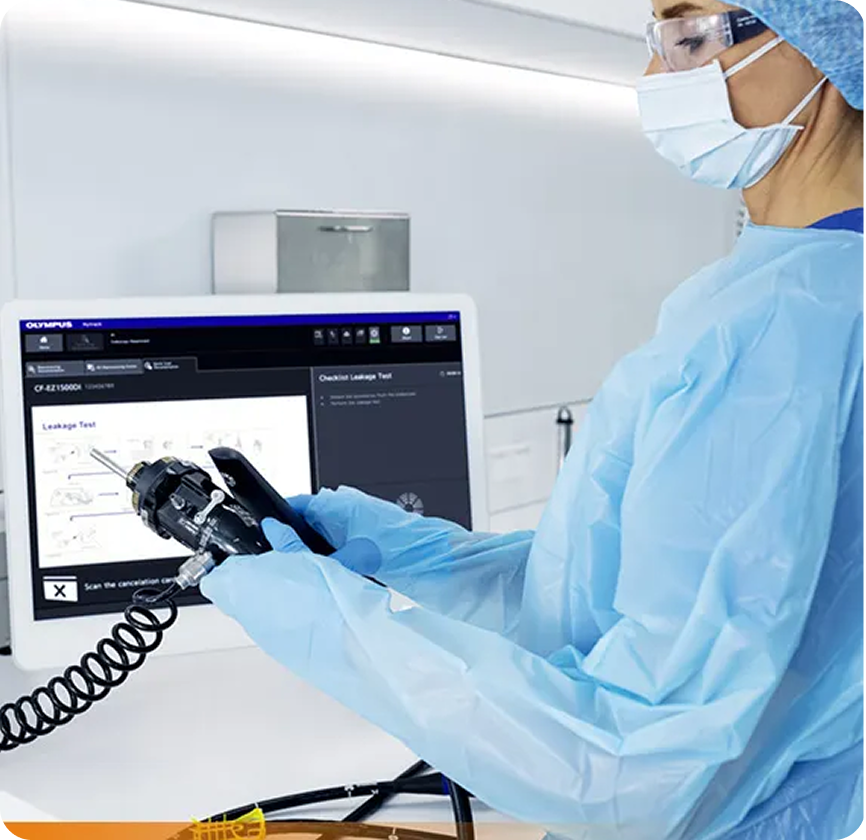
Olympus' endoscopic hardware in the procedure room
Endobase — the dated software reviewing procedure footage
The solution was an all-in-one endoscopic workflow management tool that syncs flawlessly with Olympus' cutting-edge endoscopic hardware devices - built from a foundation of modern software development methods: agile workflows and design system-led web-based development.
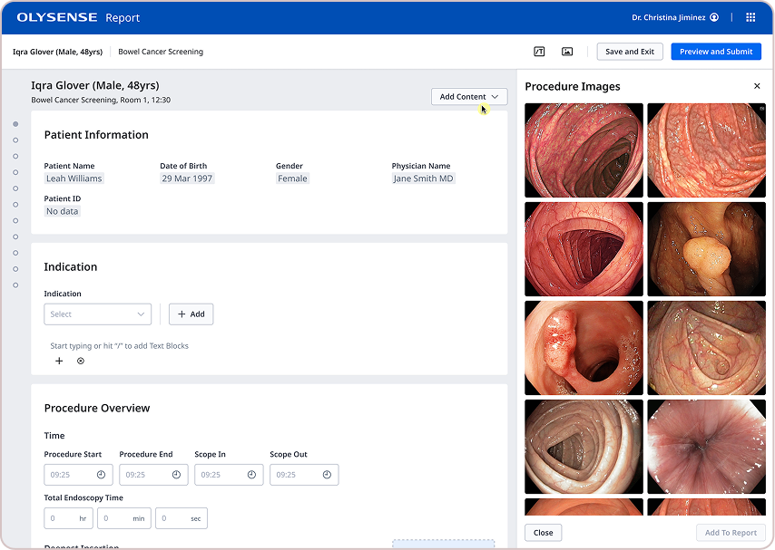
OlySense Report — patient procedure documentation
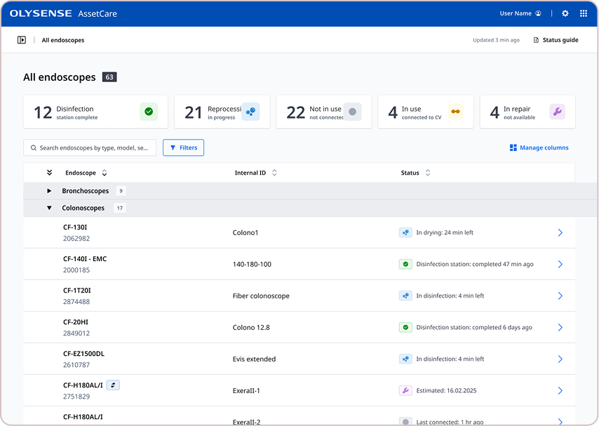
OlySense AssetCare — endoscope fleet and reprocessing status
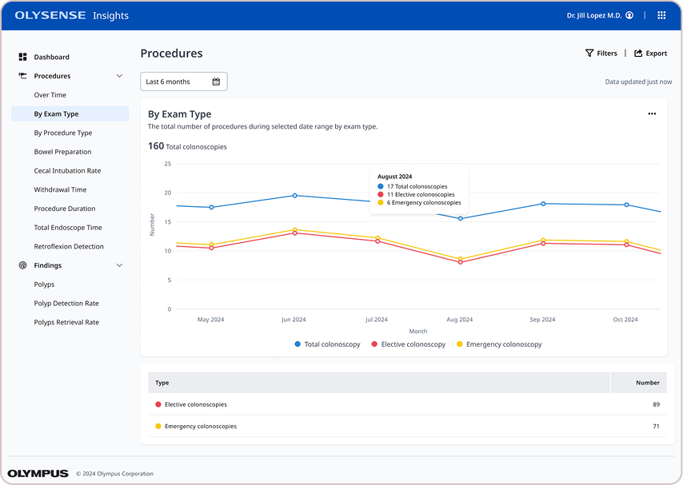
OlySense Insights — procedure analytics dashboard
In the beginning, OlySense was a collection of software products loosely held together by a similar aesthetic and a singular portal with role-based access. Multiple teams working in silos resulted in a hodge-podge of interfaces and experiences across a workflow that was meant to be comprehensive. Varying interface elements and layouts caused confusion from one screen to the next, disrupting the mental flow of doctors and nurses before, during and after routine and not-so-routine procedures. Alternating tech stacks meant no one product communicated effectively with the others. While technical teams worked out the backend systems, we built ODS to help product teams build cohesively from a single source of truth.
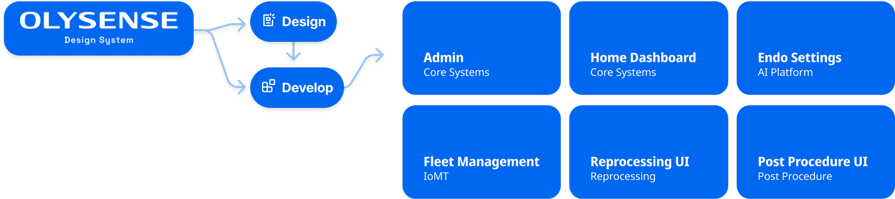
The blueprint connecting OlySense's design system to six product applications
OlySense's design language was defined by core elements, captured as tokens and applied to components, layouts and transitions. Building from a basic pre-approved color palette we introduced new hues to better support modern web interfaces, and defined a dark mode theme for use in low-light environments. An established font family used in embedded software had to be updated to an open source web font, using a minor thirds type scale, optically-adjusted. A set of baseline layouts were created to keep everything structurally consistent from one screen to the next, with primary actions and navigation always present in the application bar plus an optional side menu navigation for quicker links. Elevations were defined using drop shadows in both light and dark modes. Transitions were defined using duration and easing variables. All of these tokens were first decided upon in Figma then exported and run through style dictionary for proper formatting in code.
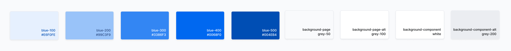
OlySense color tokens and palette
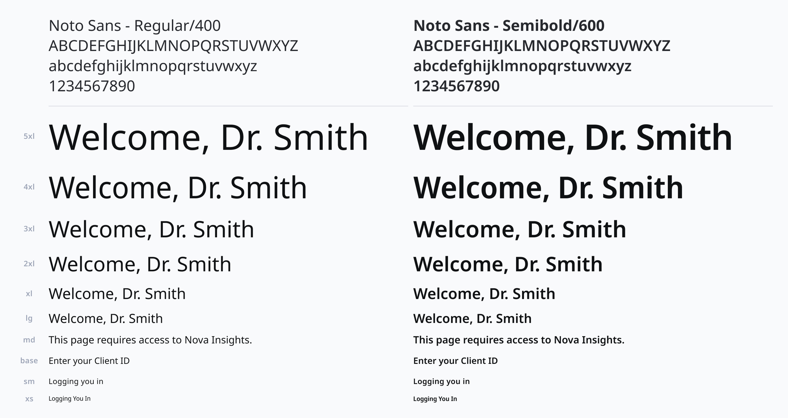
Typography scale and font tokens
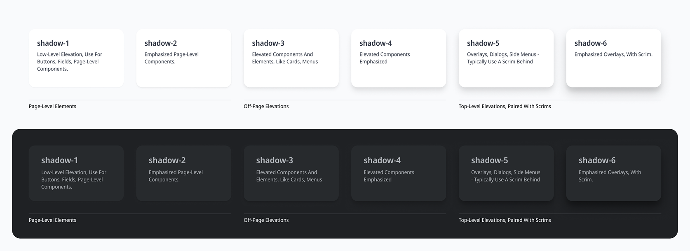
Elevation tokens for light and dark mode
Our components provided teams with consistency in their interfaces. Buttons were aligned, actions were consistent. We used a comprehensive set of standard components like tags, drop-down, cards, switches, input fields and more. We only added custom components after a rigorous vetting process to determine if they belonged in the system or remained one-offs within the specific application that introduced them.
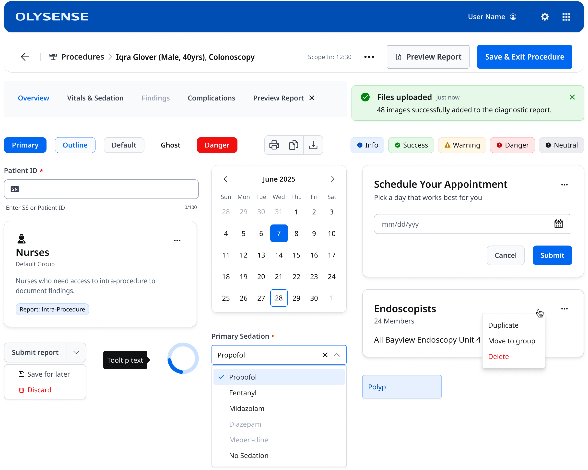
The OlySense component library
Complex components were classified as patterns. These often required specific interaction methods, like how to switch between applications using the App Switcher, which was housed in the Application Bar. Data tables, forms and pagination were all included under Patterns. This gave product teams a repeatable and consistent but versatile manner to organize, display and interact with larger sets of elements and data.
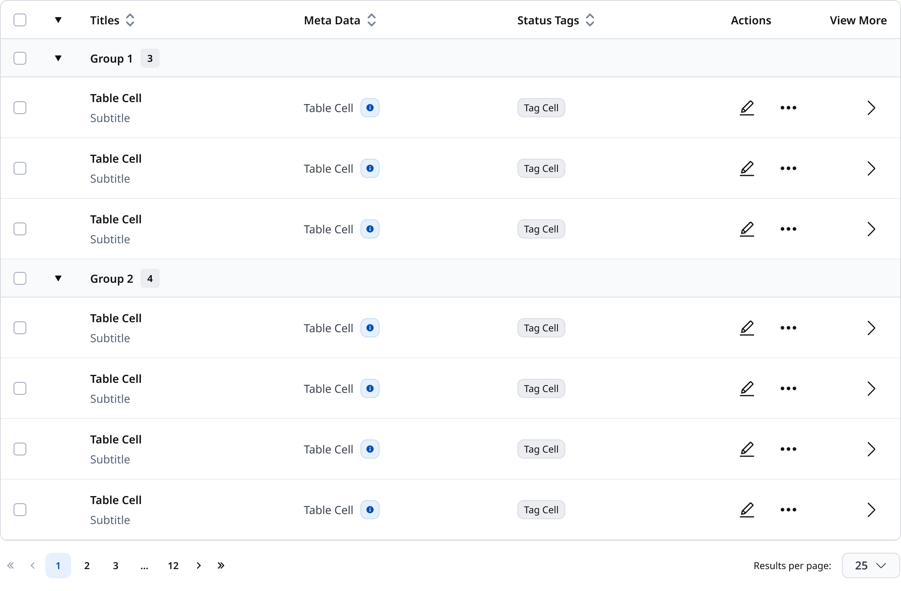
Data table pattern
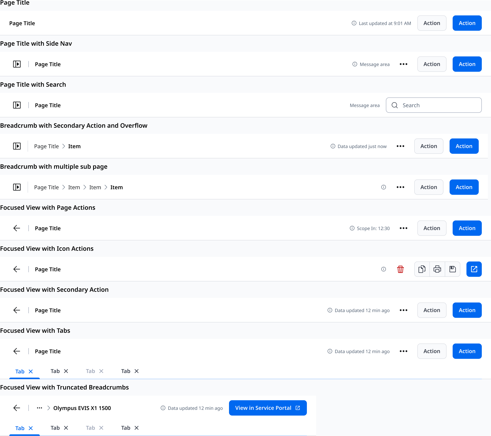
Page header variants — title, side nav, search, breadcrumbs, and focused views
Everything was documented in both Figma and our single source of truth documentation website, where designers, developers and the whole organization could learn about our design system and how to implement and use tokens, components, layouts and patterns, as well as how the design system was structured and governed. We held regular office hours, participated in design reviews and handoffs, presented at demos and to leadership, and were always available via dedicated chat rooms on Teams.
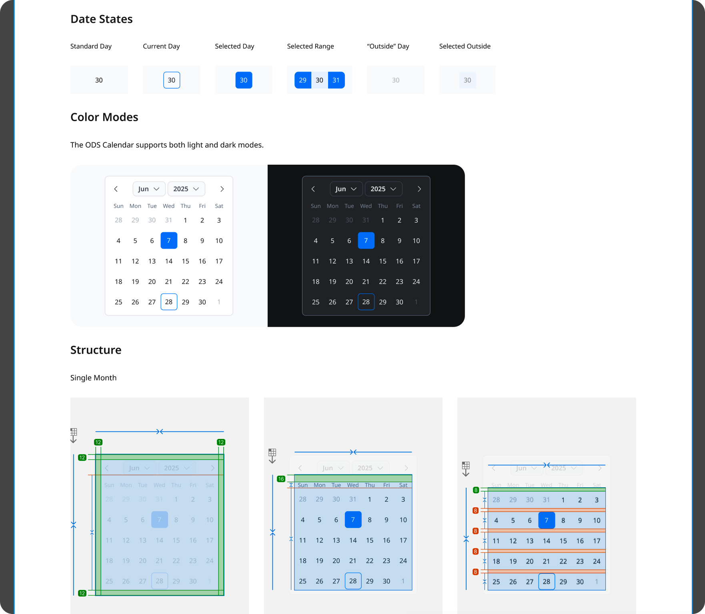
Documentation for the ODS Calendar component
With AI becoming more and more of a focus across the industry we were quickly turning our focus towards making ODS truly agentic ready. Our designers were using vibe coding tools and features so we built an MCP server to pull directly from ODS when building concept prototypes in Figma Make, with a goal of having developers also leveraging our ODS MCP server in actual development of the OlySense applications. This workstream, and all ODS work, was abruptly cut short by a round of layoffs that heavily impacted the Design and Product teams in early 2026.